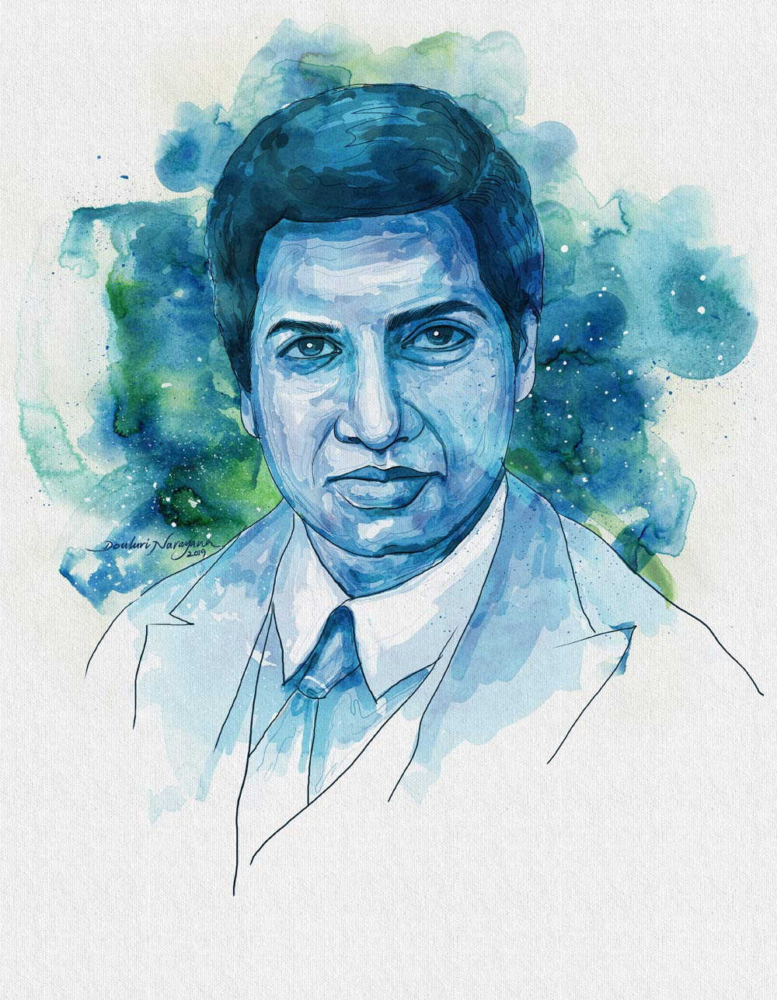

Shri Shrinavasa Ramanujan
The man who knew infinity.

Shri Srinivas Ramanujan at cambridge
Here's a timeline of Shri S. Ramanujan's life
- 1887 - Born in Erode, Tamilnadu, on december 22
- 1903 - Passes Matriculation examination from Town High School, Kumbakonam
- 1904 - Joins Government Arts College, Kumbakonam
- 1905 - Drops out of Kumbakonam college
- 1906 - Joins Pachaiyappa’s College, Madras, only to leave without completing his studies
- 1911 - Publishes first paper on Bernoulli Numbers
- 1912 - Gets a job at the Madras Port Trust
Ramanujan is introduced to G.H. Hardy’s tract on ‘Orders of Infinity.’ He provides an answer to one of the problems posed by Hardy - 1913 - Ramanujan writes his first letter to Hardy
Hardy recognises Ramanujan as ‘a mathemacian of the highest class,’and tries to organise a visit by Ramanujan to England - 1914 - E.H. Neville, a Fellow of Trinity College, Cambridge meets Ramanujan in Madras and convinces him to go to Cambridge
Neville writes to University of Madras to support Ramanujan
University of Madras offers Ramanujan scholarship
On March 17, leaves for England - 1916 - Gets B.A. degree by research from Cambridge University
- 1917 - Periodically hospitalised for treatment
- 1918 - Becomes Fellow of the Royal Society
Elected to Trinity College Fellowship - 1919 - Returns to India
- 1920 - Health deteriorates
Dies on April 26, 1920 - 1927 - Collected papers of Ramanujan, edited by P.V. Seshu Aiyar, G.H. Hardy and B.M. Wilson and published by Cambridge University Press
I had never seen anything in the least like them before. A single look at them is enough to show that they could only be written by a mathematician of the highest class. They must be true because, if they were not true, no one would have the imagination to invent them.
-- G. H. Hardy, Mathematician
If you have time, you should read more about this incrediblle human being on his Wikipedia entry.